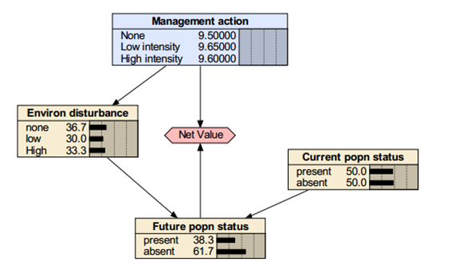
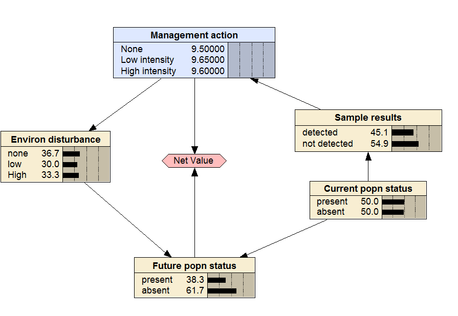
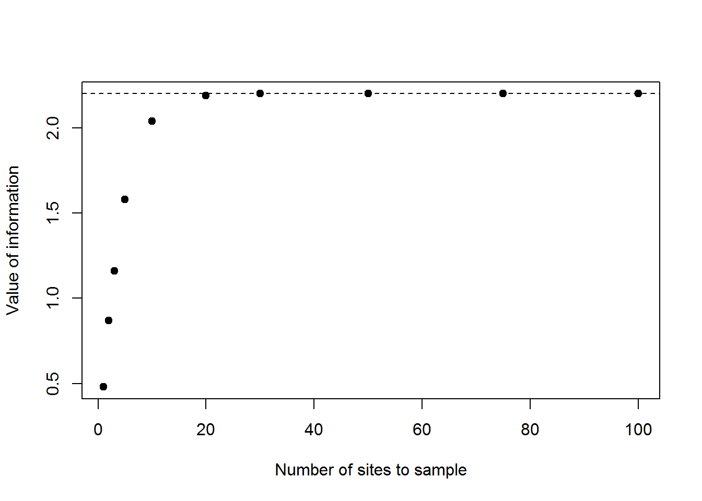

Class 21: Monitoring, Information, and ARM
1 Class preliminaries
- Supplemental background reading for next class(es):
- Reading(s) for next time:
- Conroy and Peterson Chapter 7
- Conroy and Peterson Chapter 9
- Moore, J. L., and M. C. Runge. 2012. Combining Structured Decision Making and Value-of-Information Analyses to Identify Robust Management Strategies. Conservation Biology 26:810-820.PDF
- Canessa, S., G. Guillera-Arroita, J. J. Lahoz-Monfort, D. M. Southwell, D. P. Armstrong, I. Chadès, R. C. Lacy, and S. J. Converse.
- When do we need more data? A primer on calculating the value of information for applied ecologists. Methods in Ecology and Evolution:1219-1228. PDF
- Class project:
- Be developing your decision model
- Final exam period-April 28th at 3pm.
- Link to class recording YouTube
- Today’s R script Class-21.R
1.1 Class overview & objectives
The objectives of this class are to:
- Formally incorporate monitoring into decision making
- Calculate the value of perfect and imperfect information
- Formally use monitoring to learn
1.2 Getting ready to go
A couple of networks we will be working with
Packages you may want to install to play along.
#install.packages("msm")
#install.packages("MDPtoolbox")2 Value of information
While we are trained to think about sampling and monitoring in terms of statistical power and more being better to reduce uncertainty it is difficult to evaluate how information and additional information applies to decision making. We have seen how sensitivity analyses can help us identify what components of our decision models are important that is 1 part of the puzzle. Specifically we might be interested in how information improves decision making (note this is different than understanding) and just how much information do we need to collect to make a good decision. In some cases additional information does not do much for us. We can value information in terms of our utility (maps to objectives not understanding) and calculate the value of that information. There are 2 types of information we can value, perfect and imperfect and we will look into both of those.
2.1 Expected value of perfect information
The expected value of perfect information (EVPI) is the increase in the expected value of a decision if the ‘true’ value of a model component(s) or the relationship among components is known with certainty. Thus, it can be used, in part, to identify and rank potential variables for monitoring or additional data collection efforts.
To illustrate the calculation of EVPI, consider a simple conservation decision model illustrated below where the decision to conduct a management action affects the degree of environmental disturbance which in turn, affects the future status of an animal population. The future population status also is affected by the current status of the population and takes two states, ‘present’ and ‘absent’.

The value of the decision depends on the management action and the future population status. The optimal decision and value when the probability of current species presence is 50% is ‘low intensity’ with an expected value of 9.65.
If we had information from a space age sensor or a clairvoyant told us what the the species is present with a 100% probability (i.e., absolute certainty), the optimal decision is ‘none’ with a value of 18.25. If that same sensor or clairvoyant told us the species is absent with a 100% probability, the optimal decision is ‘high intensity’ with a value of 5.45.
Unfortunately, we do not have the space age sensor and none of you are clairvoyant as far as I can see, so we assign the probabilities of current species presence and absence in the model are 50%-50% (i.e., complete uncertainty), or we might use previous information estimate from an occupancy model. These are our best estimates of the probability that the species is present, so we use them to weight the expected values of the optimal decision under perfect information as follows:
\[ 18.25 \cdot 0.5 + 5.45 \cdot 0.5 = 11.89 \]
This is the expected value of the decision if the population status was known with certainty. EVPI is calculated as the difference between the expected value with and without a knowing the current population status calculated as:
\[11.89 - 9.65 = 2.20\text{.}\]
2.1.1 More than 2 states
The preceding was a simple example of two discrete states (present or absent). Let’s assume that rather than presence and absence, we had the density of the species with a mean density (\(\lambda\)) of 10 and density was discretized into 4 states: 0-8, 8-11, 11-20, and 20+ animals per unit area. The probabilities of each state can be calculated using the following R code:
lambda <- 10
brks<-c(0,8,11,20,1000)
outcomes<-rpois(50000,lambda)
states<- cut(x=outcomes,
breaks= brks,
labels=c("0-8","8-11","11-20","20+"),
include.lowest=TRUE)
counts<- table(states)
probs<- prop.table(counts)
probs## states
## 0-8 8-11 11-20 20+
## 0.33426 0.36176 0.30268 0.00130Assume that the expected values of the optimal decisions, given abundance was with 100% probability in states 1 through 4 (i.e., we used our space age sensor or clairvoyant) are 10, 15, 21, and 23, respectively. The weighted expected value of when we have perfect information is:
values<-c(10,15,21,23)
weightedValues<- values*probs
# EXPECTED VALUE WITH PERFECT INFORMATION
ev<- sum(weightedValues) Now if the the expected value for the optimal decision was 9.8 then the value of perfect information is \(15.16-9.8\) which is \(5.36\).
2.2 Expected value of imperfect information
Although the EVPI can be useful as a first approximation, it is usually not realistic to expect information to be perfect. To account for the error in measurements or models, requires the estimation of the expected value of imperfect information (EVII). EVII is considerably more complicated to estimate than EVPI. It requires an estimate of the expected outcome and the use of Bayes rule to calculate probabilities and expected values.
We illustrate calculating EVII using the previous conservation decision model. Here the decision-maker is interested in evaluating the value of conducting sample surveys in the potential management area to detect the species. One source of imperfection in sample data that would affect the value of conducting studies is incomplete detection. We first need an estimate the probability of detecting the species give it was present. Assume that 10 samples are needed to detect the species with an 80% probability, given the species is present in the area.
The probability of detecting the species if they are not present is, of course, zero. Assuming that there is a 50% chance that the species is present, the probability of detecting the species with 10 samples is 0.8*0.5 = 0.4 and the probability of not detecting them is 1.0 - 0.4 = 0.6.
This new component is added to the model and is graphically displayed in an influence diagram with current species presence pointing into a sampling result node.
If the species is detected, we know it is present. If the species is not detected, the species may be:
- absent or (true negative)
- be present but was missed during sampling (false negative).
To incorporate the possibility of falsely concluding the species was absent, we need to use Bayes rule to estimate the probability the species is present, given it was not detected, which requires four estimates:
- Prior probability of critter being present (0.5)
- Prior probability of critter being absent (0.5)
- Probability of detecting the critter given it is present (0.8)
- Probability of detecting the critter given it is absent (0)
# prior probability of presence
priorPresent<- 0.5
#prior probability of absence
priorAbsent<- 1- priorPresent These numbers are our original values where we acknowledged we had total uncertainty (i.e., either outcome is equally likely). Now we formally incorporate sampling or monitoring by adding a node that would represent the results of a field effort. We make an assumption that the detection probability is 0.8, which may come from some occupancy studies or the literature.
#probability of detection given presence
detectionProbability<-0.8
#probability not detection given absence (no false positives)
nonDetecionProbability <-1 This is a simple case for the binomial but if abundance was used some simulation would be in order to figure out what the probability of detecting 1 or more of the the critters given the critters were there. But for the sake of coding here is how we tackle it here. If the probability of detection is 0.8 given the critter is there the probability of not detecting the critter is 1-0.8. Let’s confirm.
# PROBABILITY OF DETECTION GIVEN PRESENT
detections<- rbinom(500000,1,detectionProbability)
counts<- table(detections)
probs<- prop.table(counts)
probs[1] # Present and not detected## 0
## 0.200238probs[2] # Present and detected## 1
## 0.799762We are not going to go into depth on Bayes’ theorem but it is a way to update probabilities given new information. The general form of Bayes’ theorem is the the posterior probability of a critter begin absent given the species was not detected is equal to the probability of non detection times the prior of a critter being present divided by the probability of non detection times the prior of a critter being present plus the probability of non detection given absences times the prior probability of being absent.
post<-probs[1]*priorPresent/
(probs[1]*priorPresent + nonDetecionProbability*priorAbsent)
post ## 0
## 0.1668319The probability of absence given the species was not detected is the compliment \(1- 0.1667 = 0.8333\). But let’s make sure we can prove this.
post<-nonDetecionProbability*priorAbsent/
(probs[1]*priorPresent + nonDetecionProbability*priorAbsent)
post ## 0
## 0.8331681If we are really interested we can pretty easily calculate the posterior probabilities for population statuses given sampling outcomes. First we need to make a matrix for the outcomes of sampling given the population status.
Z<-matrix(c(0.8,0.2,0,1),
ncol=2,
byrow=TRUE,
dimnames=list(c("Present","Not present"),
c("Detected","Not detected")))
Z## Detected Not detected
## Present 0.8 0.2
## Not present 0.0 1.0That looks exactly like the CPT in the netica model.
Now we are going to set up a matrix of prior probabilities for whether the species is present or not.
p<-matrix(c(0.5,0.5),ncol=2,nrow=2, byrow=TRUE,
dimnames=list(c("Present","Not present")))Now we can multiply the transpose of Z by p and then divide by the sum of the rows to get the posterior probabilities.
xx<-t(Z) *p
xx/rowSums(xx)## Present Not present
## Detected 1.0000000 0.0000000
## Not detected 0.1666667 0.8333333The values are then entered into the model as the conditional probabilities of species presence, given the sampling result not detected. Graphically, this is depicted in an influence diagram reversing the arrow from Current popn status to sampling results illustrated below. The next step is to estimate the value of the optimal decision for the each sampling result using the new model. Open the influence diagram with the sampling results node and examine the expected value of information when the sampling result is known with 100% certainty.

For the sampling result, ‘detected’, the optimal decision in ‘none’ with a value of 18.25. The same value as present = 100%. When the sampling result is ‘not detected’, the optimal decision is ‘high intensity’ management action with a value of 6.83. Notice that this is different from the expected value of perfect information example, where we assumed absence was 100%. This is because there is a 16.7% chance that the species occurs given it was not detected, which changes the value of the optimal decision.
The final step to estimate EVII the expected values are again weighted by the probability of obtaining that sampling result and sum the values as:
\[18.25 \cdot 0.4 + 6.83 \cdot 0.6 = 11.40\text{.}\]
This is the expected value of the decision if sampling is conducted. We subtract that value from the expected value if the species was not sampled and we get \(11.40 - 9.65 = 1.75\) as the EVII. Notice that the EVII value of 1.75 is lower than the EVPI value of 2.20. This should always be the case; the value of imperfect information should always be smaller than that of perfect information. Of course, this value would be discounted by the actual cost of collecting samples. Assuming that the probability of detecting a species is related to the number of samples, the decision maker could examine how the EVII varies with sample size to determine the optimal level of sampling effort.
2.2.1 Evaluating sample size
Suppose there was an occupancy study done and the detection probability was estimated to be 0.23. We can use EVII to calculate the value of sampling a certain number of sites. In other words, how many sites do we need to sample given the decision context?
Suppose we did 1, 2, 3, 5, 10, 20, 30, 50, 75, or 100. Given the capture probability we can figure out the the probability of detecting a critter given it is the management unit by simulation, or if you are clever you can string together the probabilities. But let’s use simulation to hone our R skills and overall understanding.
pDetection<-0.23
sites<-c(1,2,3,5,10,20,30,50,75,100)
prob<- c()
for(i in 1:length(sites))
{
prob<- c(prob,
# proportion of reps with at least 1 site detected
mean(rbinom(5000,sites[i],pDetection)>=1))
}
probs<- cbind(sites,prob,1-prob) Now if we work through the netica model as we did before and change the probabilities of detecting the critter we can calculate the EVII for each sample size. The expected values given the number of sites sampled and \(p=0.23\) are in the table below and the bold values are maximums which will be used to calculate expected values adn then EVII.
Using the probability of detected or not detecting we can calculate the expected value
The results of calculating EVII for the detection probabilities above are specified in the R code below.
evii<- c(0.48, 0.87, 1.16, 1.58, 2.04, 2.19, 2.20, 2.20, 2.20, 2.20) Recall the EVPI was 2.2. The values of EVII are equal to or less than EVPI which is to be expected. but the neat thing is you can evaluate what more sampling gets you in terms of making a decision! Let’s visualize this.
plot(x=sites,y=evii,
xlab="Number of sites to sample",
ylab="Value of information",
pch=19)
abline(h=2.2,lty=2)# Value of perfect information
Wow, more data does not improve our decision! Keep in mind this is different than statistical power, here the value of information is in context of the decision and not making a type 1 or type 2 error. In terms of making a decision 20 sites is just as good as 100! That saves a manager quite a bit of effort.
3 Introduction to Adaptive Resource Management
Here we will jump into some slides that begin to cover adaptive resource management.